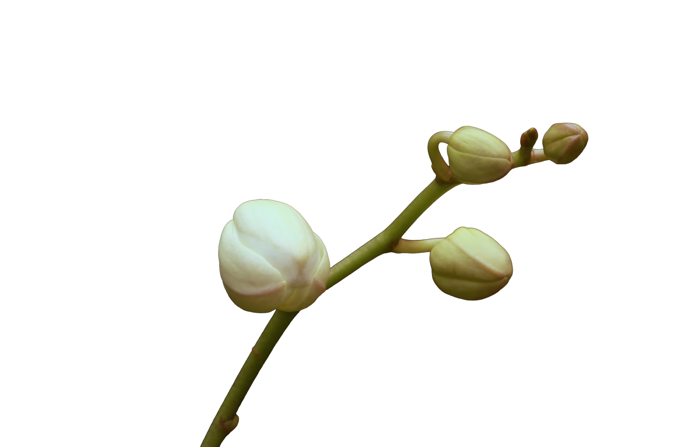

For someone who appreciates flora and fauna as much as I do, I never put myself in a position of taking care of a plant. I cannot be in control over the survival of a living organism with my organisational skills. However, I recently received a pot of orchids from my dear friend, unfortunately real. Orchids have been my favourite flower since I was young, because no matter the season my mother would always have a massive pot of orchids blooming in our living room. They are a staple in the Guan household, and though this pot is ten times smaller, it ever so slightly reminds me of being back home. Also, my love for orchids has only been compounded after finding out how easy it is to take care of them. Although...stay tuned for my future entries to see if it makes it. ⠀⠀⠀. . ﾟ . . , . ⠀⠀⠀⠀⠀⠀⠀⠀⠀⠀⠀⠀⠀⠀⠀⠀⠀ * . . . ✦⠀ , * ⠀ ⠀ , ⠀⠀⠀⠀⠀⠀⠀⠀⠀⠀⠀⠀. ⠀ ⠀. ˚ ⠀ ⠀ , . . *⠀ ⠀ ⠀✦⠀ * (update my first one died but I got a new one and it's going 4 weeks strong) . . . ˚ ﾟ . .⠀ ⠀⠀⠀⠀⠀⠀⠀⠀⠀⠀⠀, ✦⠀ ˚ ﾟ . .⠀ ⠀⠀⠀⠀⠀⠀⠀⠀⠀⠀⠀, * ⠀. . ⠀✦ ˚ *.⠀ . . ✦⠀ , . ⠀⠀⠀⠀⠀⠀. ⠀⠀⠀✦ ⠀ ⠀ ⠀⠀⠀⠀⠀* ⠀⠀⠀. . ⠀⠀⠀⠀⠀⠀⠀⠀⠀⠀⠀ * .